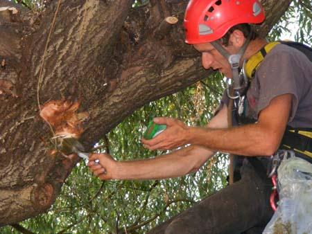

Поддръжката на парцелите с дървета представлява професионални грижа за дърветата.Това включва : Подобряване растежа на дървото Подобряване плодовитостта на дървото, Подобряване растежа на корена, Запълване на хралупи и кухини в дървета, Изолиране на цепнатини (мразобойни), Ашладисване и облагородяване на дървета, Поддръжка на бонсай, Инсталиране на мълниезащитна система, Периодично или единично пръскане срещу насекоми, мъхове, гъби и други вредители по дърветата, Стягане на клони със слаба привързаност към дървото с цел укрепване, Ограждане на дървета, Мулчиране на дървета, Прекарване на проволка, помагаща за правилния растеж на дървото, Табелки обозначаващи дадено дърво, Есенно листо събиране, Пролетно опрашване чрез специални пчели, Завиване на топло любили дървета за зимата, Поддръжката на едно дърво е важно за здравето и дълголетието му.
Когато то профилактично се кастри, животът му е по-дълъг, не е опасно, не пречи на никого и изглежда красиво. Не се ли „изолира” едно дърво или казано с други думи, не се ли запълнят изгнилите участъци със специални пасти и пълнители, кухините се увеличават и така дървото загива. При засаждането на млади дръвчета, поддръжката е неизбежна - прокарване на проволка за заздравяването им и правилното израстване, превързване на слабо захванати клони с цел укрепване.
При поддръжката на едно растение е важно неговото опазване и повсеместните грижи за него - пръскането с препарати против вредители и насекоми, периодичното му наторяване, мулчиране и поливане.